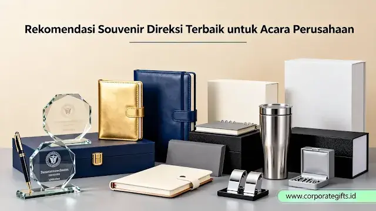

Mengapa Souvenir Direksi Harus Dirancang Spesial?
Corporate Gifts ID - Dalam tatakelola korporasi modern, jajaran direksi memegang peranan krusial sebagai nahkoda yang menentukan arah pertumbuhan bisnis. Ketika perusahaan menggelar rapat tahunan, corporate gathering, perayaan anniversary, maupun acara serah terima jabatan, cinderamata yang diserahkan kepada para pemimpin puncak membawa pesan simbolis yang mendalam.
Memberikan souvenir direksi bukan sekadar pemenuhan agenda protokoler, melainkan instrumen komunikasi non-verbal yang mencerminkan rasa hormat, apresiasi tulus, dan reputasi keanggunan brand perusahaan. Cinderamata yang dirancang dengan mutu tinggi mempererat keterikatan emosional antara manajemen puncak dan entitas korporasi, sekaligus membangun persepsi positif di hadapan para pemangku kepentingan (stakeholder) eksternal.
5 Kriteria Utama Souvenir Tingkat Direksi
Sebelum memilih produk fisik, panitia pengadaan wajib memahami lima parameter kelayakan hadiah bagi eksekutif C-Level:
- Eksklusivitas Tinggi: Produk tidak beredar bebas sebagai komoditas eceran massal di pasar umum, memiliki desain unik dan kuota produksi terbatas.
- Kualitas Material Premium: Pemilihan bahan baku bermutu tinggi seperti kulit sapi asli full grain, kayu solid pilihan, kristal optik berkejernihan tinggi, dan logam bersepuh rapi.
- Desain Elegan dan Bersahaja: Mengadopsi prinsip desain minimalis modern yang anggun tanpa ornamen berlebihan.
- Branding Halus (Subtle Logo): Identitas korporat disematkan secara proporsional dan tidak mencolok, misalnya melalui deboss mikro atau grafir di bagian belakang produk agar tidak tampak seperti barang iklan.
- Sentuhan Personalisasi (Monogram): Penambahan nama lengkap, inisial jabatan, atau ukiran tanda tangan pribadi yang menghadirkan nilai sentimentil eksklusif.

Detail pulpen metal grafir laser dan organizer kulit premium untuk jajaran pimpinan direksi.
10 Rekomendasi Souvenir Direksi Terbaik untuk Acara Perusahaan
Berikut kurasi 10 pilihan hadiah eksekutif yang telah terbukti memberikan impresi mendalam bagi jajaran direksi:
- Executive Pen Set dalam Kotak Kulit Eksklusif: Kombinasi fountain pen dan rollerball berbahan logam berbobot solid dengan grafir nama direktur, disajikan dalam presentation box berbalut kulit sintetis mewah.
- Leather Organizer & Business Portfolio: Map dokumen eksekutif berbahan kulit asli yang dirancang fungsional untuk memuat iPad, dokumen kontrak rahasia, pulpen, dan kartu nama pimpinan.
- Jam Meja Premium dari Logam & Kayu Solid: Simbol kepemimpinan dan manajemen waktu yang elegan, bertengger anggun di atas meja kerja ruang direksi.
- Crystal Trophy dengan Desain Geometris Minimalis: Plakat kristal murni dengan grafir 3D laser internal, sempurna untuk merayakan pencapaian target strategis atau cinderamata purnatugas.
- Exclusive Executive Travel Set: Dompet paspor kulit asli, luggage tag monogram, dan card holder ramping untuk mendukung mobilitas dinas luar negeri jajaran direksi.
- Modern Artisan Coffee / Tea Set: Paket seduh kopi manual bergaya kontemporer dengan cangkir keramik artisan berlogo halus, menyajikan kehangatan di sela-sela padatnya agenda rapat.
- Custom Desk Nameplate Logam Presisi: Plat nama meja berbahan kuningan atau akrilik matte tebal dengan ukiran nama dan titel direktur yang mempertegas wibawa ruang kantor.
- Bluetooth Speaker Portabel Berbalut Logam/Kayu: Audio portabel premium dengan output suara jernih dan balutan grille kayu walnut alami yang menyatu apik dengan estetika ruang kerja eksekutif.
- Jam Tangan Korporat Kustom Eksklusif: Arloji formal dengan penempatan logo perusahaan di plat belakang (caseback), menjadikannya koleksi pribadi yang prestisius.
- Premium Executive Gift Box Set: Paket gift box magnetik terpadu yang memadukan buku catatan bersampul kulit, smart powerbank wireless berkapasitas besar, dan pulpen signature metal.
Tabel Matriks Pilihan Souvenir Direksi Berdasarkan Momentum Acara
Menyelaraskan jenis cinderamata dengan konteks acara memastikan hadiah memiliki relevansi tinggi:
| Momentum Acara Korporat | Rekomendasi Hadiah Direksi | Karakteristik Utama | Nilai Filosofis |
|---|---|---|---|
| Rapat Umum Pemegang Saham (RUPS) | Executive Leather Portfolio & Pen Set | Fungsional tinggi, material kulit asli, deboss halus | Ketelitian strategi dan profesionalisme kemitraan |
| Anniversary Perusahaan / Gala Dinner | Jam Meja Elegan Logam-Kayu / Arloji Kustom | Desain abadi (timeless), caseback ukiran logo emas | Perjalanan waktu dan loyalitas kepemimpinan |
| Pisah Sambut & Purna Tugas Direktur | Plakat Kristal Optik & Exclusive Gift Box Set | Sentuhan personal tinggi, sertifikat penghargaan | Kehormatan warisan karya dan apresiasi seumur hidup |
| Strategic Leadership Retreat | Executive Travel Set & Portable Speaker | Ringkas, premium gadget, mendukung mobilitas | Keseimbangan produktivitas kerja dan inspirasi baru |
Tips Memilih Vendor dan Waktu Strategis Penyerahan
Pengadaan souvenir level direksi memiliki toleransi kesalahan (zero tolerance) yang sangat ketat terhadap cacat produksi. Pertimbangkan pedoman penting berikut:
- Validasi Sampel Fisik (Proofing Sample): Selalu minta vendor membuat satu unit sampel utuh (golden sample) lengkap dengan grafir dan kemasan sebelum proses produksi massal dijalankan.
- Perhatikan Kualitas Kemasan Luar: Gunakan rigid gift box dengan lapisan beludru bagian dalam serta pita satin elegan untuk menyempurnakan seremoni penyerahan.
- Sertakan Kartu Ucapan Bertandatangan: Surat sambutan yang ditandatangani oleh Dewan Komisaris atau Chairman menambahkan bobot emosional yang berharga.
Kesimpulan Praktis
Memilih souvenir direksi terbaik bukan sekadar mempertimbangkan label harga, melainkan ketepatan dalam memadukan keanggunan desain, mutu material, fungsionalitas, serta penghormatan tulus. Hadiah yang dipersiapkan dengan cermat akan menjadi simbol prestise abadi yang memperkokoh reputasi institusi Anda.
Konsultasikan kebutuhan cinderamata VIP perusahaan Anda bersama CorporateGifts.ID. Hubungi tim konsultan kami melalui form permintaan penawaran resmi (RFQ) atau telusuri koleksi lengkap pada katalog Souvenir Custom VIP kami.
Pertanyaan Seputar Souvenir Direksi (FAQ)

Ditulis oleh: Arinda Zakia
Senior Corporate Gifting SpecialistSpesialis kurasi cinderamata perusahaan, gift set eksekutif VIP, dan pengadaan merchandise kantor dengan pengalaman lebih dari 7 tahun dalam industri corporate gifting di Indonesia.
Lihat Profil Lengkap & Panduan Lainnya